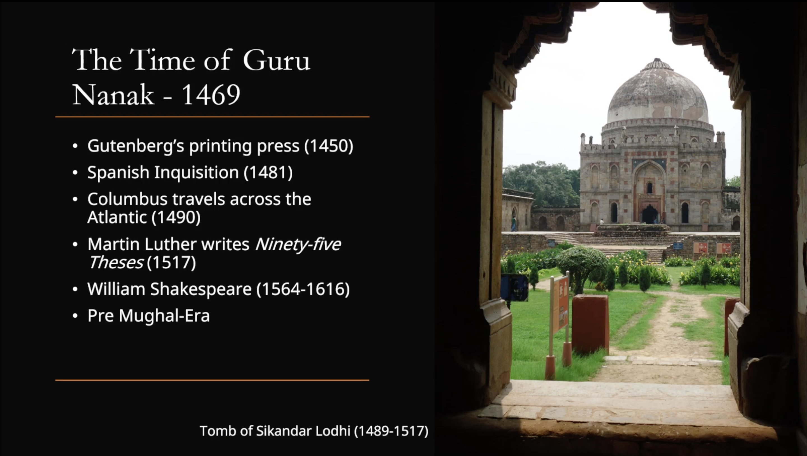
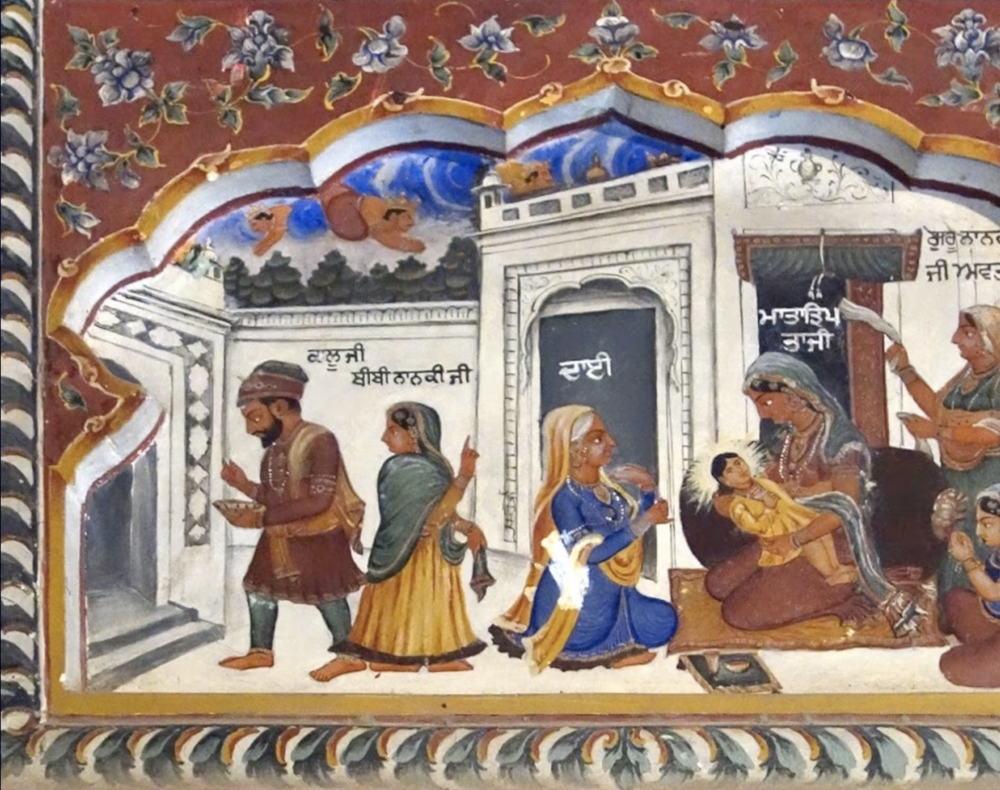
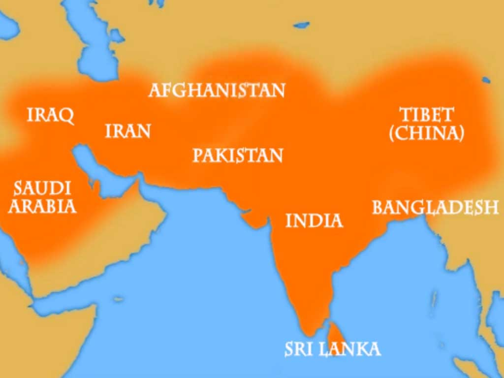
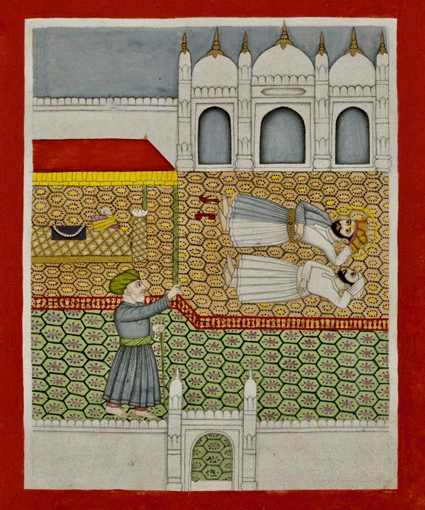
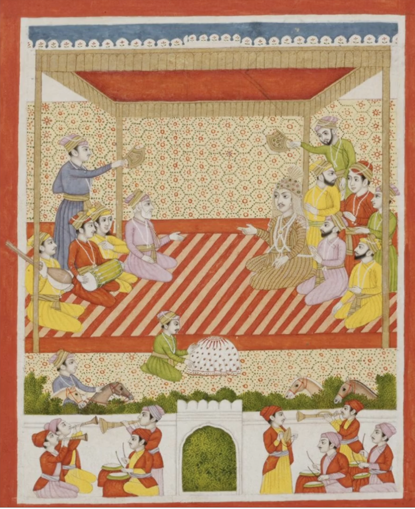
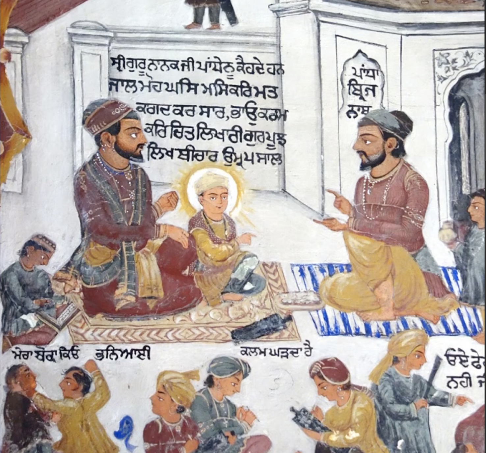

What this lesson sets up
SS 101 traces the Sikh tradition from Guru Nanak to Guru Gobind Singh. Lesson 1 builds the foundation: the political and religious world of 1469, why colonial history-writing distorts that world, how to read the sources for Guru Nanak's life, and the core ideas — the "flavours" — of his writing, beginning with Naam.
- How did religion actually function in precolonial Punjab — and how is that different from how we picture it now?
- Why must precolonial history not be read through a colonial lens?
- What kind of texts are the Janam Sakhis, and how should they be read?
- What does Guru Nanak mean by Naam — and why devotion over definition?
Part 1Getting started
SS 101 is a journey through the Sikh tradition that will move from Guru Nanak to Guru Gobind Singh, the tenth and final Sikh Guru. This is not a series about isolated ideas; it is a tradition unfolding across history, studied in sequence.
Depth tracks effort. The mandatory readings should be done, but the additional readings are where much of the intellectual and spiritual payoff lies. Each lesson pairs at least one mandatory reading with a selection of further ones, chosen to remain useful long after the course ends — and to introduce you to leading Sikh academic scholars and important precolonial texts. The course teaches not only content but where knowledge comes from and whom to read.
Lesson 1 covers a wide arc:
- The sociopolitical context of Guru Nanak's time (drawing largely on the Asher & Talbot reading) — who ruled when he was born in 1469, and who the major powers were. The Mughal Empire recurs throughout the course, so it is introduced from the start.
- The major themes and ideas in Guru Nanak's writings — not exhaustively, but enough to form a base for later lessons. (Close interpretive analysis of Gurbani begins next lesson.)
- The Janam Sakhis, the narrative traditions about Guru Nanak's life — and the methodological question of what kind of text they are before we read them.
- The Divine through categories such as Paramatma, Rab, and Vaheguru, and the distinction of Sarguna and Nirguna — with form and without form.
A first warning frames everything that follows: religion in the precolonial period did not function the way many people imagine religion today. That reminder is meant to temper modern assumptions from the very beginning.
- The course runs Guru Nanak → Guru Gobind Singh, and depth depends on effort — the extra readings carry much of the payoff.
- Lesson 1 sets up four things: the world of 1469, the Janam Sakhis as a kind of text, the core ideas of Guru Nanak's writing, and the Nirguna/Sarguna frame for the Divine.
Part 2Reading history without colonial boxes
Identities in the precolonial period were multivalent, and political and religious relationships were layered. Boundaries between traditions existed, but they were not lived in the rigid way modern people expect. It would not have been unusual for Muslims to take part in a Sikh darbar, court, or divan where kirtan was performed. In Darbar Sahib, Muslim rababis openly performed the seva of kirtan — a pattern visible into the twentieth century, when it changed, which is exactly why the older pattern must be kept in mind.
As Arvind-Pal Mandair argues, "religion" as we tend to understand it is a relatively recent invention, emerging in the nineteenth century through the intersection of various discourses. The point is not that people had no commitments before then, but that the modern idea of religion locks people into sealed categories and treats cross-participation with suspicion. Processes such as the colonial census are part of why. Begin, then, with the awareness that the very function of religion in the precolonial period was different.
That shared world had a shared vocabulary. Sufi texts from Guru Nanak's time, such as the premakhyans, often use names for the Divine that are not exclusively Quranic — not only Allah, but also Hari, Bishan, and Ram. So the question becomes: how are these names being used? Do they mean what they would in a Vaishnav setting, or are they reframed? A Hindu or Sikh could hear a Sufi recitation in a dargah and find the names familiar; a Vaishnav could hear praise of Hari or Ram through one lens while a Sufi preacher explained them through another. Traditions were not all the same — the symbolic and devotional space was simply more permeable than later models allow. The Sikh tradition had real boundaries and a distinct identity; what differed was how communities interacted.
The painting as evidence

The painting is not decoration; it is visual evidence for a historical claim, letting us see the mixed devotional world rather than only hear about it. Around the parkarma and the sarovar is a wide range of devotees. At the lower left, a figure with a conical blue turban and dhamalla — an Akali Nihang — carries a club on his shoulder. On the far left, a group of ash-covered ascetics grind a green cannabis drink. On the right, a woman with a child. Many kinds of people inhabited the same sacred space, and not all of them match a later imagination of who counts as Sikh in the Khalsa sense.
Though it belongs to the colonial period — British power was already established in Punjab — the painting preserves older continuities that remained visible into the late nineteenth century. Only in the early twentieth century did this world begin to break apart into hardened, antagonistic camps: Sikhs versus Muslims, Muslims versus Hindus, Hindus versus Sikhs. That opposition-driven model does not accurately describe the precolonial period before colonial intervention.
For those who want to go deeper, the lecture points to Harjot Oberoi on the construction of religious boundaries, Mandair's The Specter of the West, and Carl Ernst on Sufism and yoga (including Sufis adopting forms of Hatha Yoga). Should such borrowing be dismissed as dilution, or is the reality more complicated? Even the word syncretic may be too simple; we need better ways of talking about these interactions.
When you meet precolonial Sikh material that looks "mixed," don't rush to label elements Hindu or Muslim and conclude it isn't "real" Sikhi. Across the tradition, concepts, metaphors, and narratives are redefined and uniquely used by each community — including the Sikh community.
The colonial lens: James Mill's three ages
History must not be read through a colonial lens, because the categories used to tell history can quietly reshape how whole communities are imagined. James Mill, a Scottish writer associated with the East India Company, wrote influentially about Indian history, and his model of dividing it into three periods shaped both later understandings of the past and the way the British understood their own mission.
- Ancient Hindu golden age → long Muslim / Mughal "decline" → British "rescue" (railways, colleges, translation, legal reform, the ending of social evils such as sati).
- This is not neutral history but a moral and political justification for imperial rule — comparable to modern imperial language, e.g. America framing its role in Afghanistan as "opening schools for women." Empire describes itself as humanitarian to legitimise domination.
- It treats the long medieval period (~11th–19th century) as stagnant — which scholars have shown is simply false. That era produced remarkable paintings, texts, and culture. The model slanders a vast span of history and turns that slander into justification for rule.
- It chops history into religious boxes, ignoring the deep interconnectedness of traditions.
The numbers complicate the moral story. During the Mughal period, Muslims were only about fifteen percent of the subcontinent's population — a minority ruling a majority. When the Sikhs ruled Punjab under Maharaja Ranjit Singh, Sikhs were only around ten percent of Punjab's population. This does not erase conflict, but it complicates simplistic stories about who ruled whom.
If one only hears that Sikhs and Mughals were always enemies, the relationship is flattened. The harshness was real — the lecture explicitly names the executions of the fifth Guru and the ninth Guru under the orders of Jahangir and Aurangzeb. But the black-and-white telling leaves out the many forms of political and spiritual integration that also existed: the importance of the Sufi Mian Mir; the Janam Sakhi tradition in which Guru Nanak meets Kabir; and the way Guru Amar Das, assembling pothis that would eventually feed into Guru Arjan's compilation of the Adi Granth, included the compositions of Kabir and other Bhagats from across the subcontinent.
Why is there such deliberate creation of shared dialogue? This is one of the key historical and interpretive questions to hold through the whole course.
- Precolonial religion was permeable, not boxed; sealed, mutually exclusive "religion" is largely a nineteenth-century construct.
- The Bishan Singh painting is evidence of that mixed devotional world.
- Colonial history-writing (Mill's three ages) is imperial justification, not neutral truth; Sikh–Mughal history was entangled, not pure opposition.
Part 3Guru Nanak in world history
Guru Nanak was born in 1469 — not in a distant, timeless world, but in an age close to events many will recognise from European history. The Gutenberg press had recently transformed the circulation of texts. The Spanish Inquisition was underway. Columbus crossed the Atlantic in his lifetime. Martin Luther was writing the major works of the Protestant Reformation while Guru Nanak was alive — and the British later drew a parallel between Luther and Guru Nanak, both imaginable (through a Protestant lens) as figures challenging religious authorities and emphasising a direct relationship with the Divine. Shakespeare, by contrast, belongs not to Guru Nanak's lifetime but to the period of Guru Arjan — a comparison that also flags Guru Arjan as a prolific writer: he is the most prolific contributor to the Guru Granth Sahib, authoring the greatest number of its passages.

Before the Mughals: the Delhi Sultanate
The period of Guru Nanak's birth is still before the rise of the Mughal Empire. The order then in place is what historians call the Delhi Sultanate — Turko-Afghan regimes ruling mainly the north of the subcontinent. The Lodhis, described as Afghan or Pathan rulers, were a key dynasty; their memory remained meaningful long after their fall (Ahmad Shah Durrani / Abdali, associated with the Vadda Ghallughara, even wrote of restoring the age of the Lodhi dynasty).

- Don't imagine a straightforward Islamic state in a rigid civilizational sense — most scholars reject that simplification.
- The Sultanate shared greatly with Indic polities of the time; the Sultans were rulers, not religious leaders, and generally continued existing Indic political practices.
- Their main concern was not ideological transformation of society but secure access to agricultural surplus and trade routes linking the subcontinent with Afghanistan.
- Political authority was fragmented; much of rule revolved around taxation and land revenue.
Babur's conquest and a changing military world
Guru Nanak himself records the battle between the Mughals and the Pathans, and the contrast between the two armies is striking. On one side, topaks — firearms and guns — used by the Mughals. On the other, hasti — war elephants — used by the Delhi Sultanate. The Afghans relied on an older style of Indian warfare while the Mughals brought new gunpowder methods and mounted techniques that let them overwhelm their opponents. That shift produced Babur's victory in 1526 and the founding of the Mughal Empire.
The word "Mughal" derives from "Mongol": Babur was of Turko-Mongol background, part Turk and part Mongol — which is why he does not look like what many casually imagine as a typical Indian Muslim ruler. His reign in India was short, only about five or six years. His son Humayun succeeded him, lost power to the Pathans, left the subcontinent through Afghanistan to Persia, and returned with Persian support (though he himself was not Persian). This sequence matters because Sikh literature repeatedly places the Gurus in relation to the Mughal emperors — it becomes part of Sikh narrative memory and historical self-understanding.
- Babur — founds the empire, 1526 — time of Guru Nanak
- Humayun (1530–1556) — in Mehma Prakash, described meeting Guru Angad Dev Ji
- Akbar (1556–1605) — associated with Guru Amar Das, Guru Ram Das & Guru Arjan
- Jahangir (1605–1627) — linked with Guru Hargobind
- Shah Jahan (1628–1658) — in conflict with Guru Hargobind
- Aurangzeb (1658–1707) — orders the execution of Guru Tegh Bahadur
- Decline, 1707–1857. Guru Gobind Singh meets not Aurangzeb but his successor, Bahadur Shah.
After Aurangzeb the empire enters major decline through the eighteenth century: the Marathas gain ground from the Deccan and the Sikhs increasingly gain territory in Punjab. The two timelines overlap with surprising neatness — Guru Nanak lives slightly before Babur's arrival, and Guru Gobind Singh passes away only one year after Aurangzeb.
Parallel Sikh lineages: the rival claimants
An equally important complication lies within Sikh history. The line from Guru Nanak to Guru Gobind Singh is the orthodox lineage — but it was not the only one operating during this period. Although the tradition is commonly narrated as a smooth succession, the historical reality included influential rival groups competing for authority, prestige, and institutional power, sometimes through active struggle and attempts to enlist political authorities against one another.

- Prithi Chand (the line later called Mīnā, a derogatory term) — eldest son of Guru Ram Das, elder brother of Guru Arjan; disputed the succession. Succeeded by Meharban, then Harji.
- Ram Rai — eldest son of Guru Har Rai, elder brother of Guru Har Krishan; set himself up with a separate claim.
A painting from Har Sahai in Punjab depicts Meharban seated on the throne — underscoring that this was not a trivial fringe presence. These groups also produced literature, often in poetic meters resembling Gurbani in form; some scholars, especially Hardeep Syan, read parts of Guru Gobind Singh's writing as responding to figures such as Harji. The internal contest was real and even dangerous: some of the poisonous accusations against Guru Arjan Dev Ji — whose execution Jahangir ordered — came, shockingly, from within his own family. Ram Rai's story ultimately includes a reconciliation near the end of his life, which the course will revisit in the period of Guru Gobind Singh.
The Udasis
The Udasis are the group linked to Sri Chand, Guru Nanak's son, who adopted an ascetic way of life from a young age. They did not live by the householder ideal Guru Nanak promoted — yet they should not be understood as a straightforward enemy tradition. Sri Chand is remembered as meeting the Gurus, and later Udasi groups at times sit within the darbar of Guru Gobind Singh; the mahant of the Udasi contingent in that period is even said to have fought in Guru Gobind Singh's first battle, proving his strength and loyalty. The Udasis often moved alongside the orthodox line in genuinely useful ways, especially in the eighteenth century.
Major interpretive differences emerge later, though, when Sikh literature is read through an Udasi lens versus the perspective of the Giani Bunga, a Sikh institution of the eighteenth century — Japji Sahib in particular becomes a site where these differences matter. This is another way the lesson prepares you not to flatten Sikh history into a single, uncontested voice.
Don't confuse a rival claimant (Prithi Chand, Ram Rai), a parallel tradition (the Udasis), and a simple outside opponent. The lecture is asking you to hold these as different categories.
- 1469 sits in a recognisable world moment (Gutenberg, the Inquisition, Columbus, Luther); Guru Nanak's birth precedes the Mughals — the Delhi Sultanate ruled.
- Babur's gunpowder wins in 1526; the Mughal emperors map neatly onto the Guru period.
- Sikh history held rival lineages (Prithi Chand, Ram Rai) and parallel traditions (the Udasis) — not a single smooth line.
Part 4His life & the Janam Sakhis
Guru Nanak was born in 1469 and passed away in 1539, into the Bedī family, a Khatrī (merchant) caste household. The two great narrative sources for his life are the Janam Sakhi literature and Bhai Gurdas's Vārān.

Though this fresco was likely painted in the late nineteenth or early twentieth century — within the colonial period — it preserves precolonial Sikh narrative imagination. Above the birth scene, heavenly beings and deities descend; that iconography comes from the Janam Sakhi tradition, a reminder that Sikh narrative worlds travel through image as well as text.
How to read the Janam Sakhis
The Janam Sakhis are narrative traditions recounting Guru Nanak's life, dating broadly from the late sixteenth into the eighteenth century. Several groups produced their own versions — the Meharban, Bala, and Puratan Janam Sakhis, plus an eighteenth-century text attributed to Bhai Mani Singh, the Gyan Ratnavali (still untranslated). There is not one Janam Sakhi but a family of related traditions.
They should not be read as modern history textbooks — they do not narrate Guru Nanak's life the way a standard history of the American Revolution narrates events. As Nikky-Guninder Kaur Singh writes, "Janam Sakhis tell the life stories of Guru Nanak in the language of myth and allegory. They depict the divine dispensation of Nanak, his concern for kindness, social cohesiveness, his stress on divine unity, and the consequent unity of humanity." Here myth and allegory are not insults or grounds for dismissal — they are storytelling techniques used to express Sikh philosophy and to illuminate Gurbani. Later materials can include dates, chronology, and named witnesses, but the project is to reveal the spiritual meaning of Guru Nanak's life, not to archive facts. Bhai Gurdas's Vars (he was a contemporary of Guru Arjan) sit alongside the Janam Sakhis as another such source, also working through allegory and myth.
- Guru Nanak's birth and early life · professional employment
- The start of his mission and his travels
- The establishment of Kartarpur
- The appointment of Guru Angad as successor
- Throughout, the shabad is the kernel of the narrative incident — the stories often function as commentary on Gurbani
One emblematic detail: in the Janam Sakhi tradition, the midwife is astonished because Guru Nanak is born laughing rather than crying. Where almost every child enters the world crying, his opposite response signals who he is — entering in joy, wonder, and bliss, already seeing the Divine in everything. The story is less biological description than a claim about the kind of consciousness the tradition associates with him.
The gods saluting at birth

The Puratan Janam Sakhi (the oldest tradition) describes the 33 devas, 64 yoginis, 52 heroic beings, 6 celibates, 84 siddhas, and 9 nathas all descending to salute Guru Nanak at his birth. These categories carry real prestige: the devas include Vishnu, Shiva, Brahma, Surya, Indra; the yoginis include Kali and Chandika; the heroes include Hanuman, Narasimha, Nandi; the siddhas are yogic adepts, especially Nath; the naths their major leaders.
But the story is not simply praising these beings. Kabir, in Guru Granth Sahib, says the devas are immersed in maya, the celibates are slaves to maya, the 84 siddhas are within maya's play, and the nine naths — even the sun and moon — are asleep in maya. So the Janam Sakhi is making a theological claim about Guru Nanak's status in relation to them.
These narratives take a widely recognised sacred world and reorder it — placing all its prestigious figures beneath Guru Nanak. It is not passive borrowing of Indic imagery but a reordering of it. Seeing deities and concluding "this looks Hindu" is the wrong reading: scholars (Vig, Nikky-Guninder Kaur, Oberoi, Mandair) read it as symbolic and theological reworking, not dilution. The images are iconographic, not realistic — even Guru Nanak's small earrings are symbolic (engagement with the world, a life-affirming stance, associations with royalty and chivalry). Read them within the world that produced them.
The travels, and Mecca

- Four large travels — the Udāsīs
- Spreading the message · visiting festivals · pilgrimage sites
The Janam Sakhis portray Guru Nanak travelling very widely — west toward Arabia and Iraq, north and east toward Tibet, south toward Sri Lanka — which helps explain Sikh memory and congregational traces across Afghanistan, Iran, Tibet, and present-day Pakistan. But the aim is not to map an exact route or supply dates like a historian; the travels and the conversations within them are pedagogical, used to explain Sikh philosophy and orient the listener toward Gurmat.
At Mecca, Guru Nanak lies with his feet pointed toward the Kaaba. A cleric objects; Guru Nanak tells him to turn his feet toward a place where the Divine does not reside. The cleric moves them, and wherever he turns them the Kaaba appears to shift to align. Whether or not it happened in that exact form, the pedagogical pattern (per Nikky-Guninder Kaur) is what matters: Guru Nanak takes an established sacred code and overturns it to unsettle assumptions and reorient toward the omnipresent, formless (nirguna) Divine. Respect for the shrine is not denied — it is placed within a larger awareness.
Guru Nanak and the yogis
If there is one group with whom Guru Nanak most clearly clashes, it is the yogic tradition — especially Hatha Yoga. Drawing on Vogel's work, three contrasts stand out:
- Grace vs effort — Guru Nanak emphasises sahaj (ease, spontaneity, grace); the yogic path emphasises force, discipline, and effort.
- Devotion vs technique — bhakti vs jugti; the Nath and Hatha practitioners develop breathwork, posture, and meditative control aimed at liberation or powers, whereas Guru Nanak points to devotion and the Guru's grace.
- Community vs solitude — Sikh practice emphasises sangat; yogic practice tends toward solitary withdrawal.
ਕਲਿਜੁਗ ਨਾਨਕ ਸੁਖਾਲਾ ॥੩੧॥
The point is not crude triumphalism. In the Siddh Gosht, through the Shabad, Guru Nanak differentiated his path from the yogis' — marking out a distinct way rooted in devotion, grace, and communal life: the easy path of Nām.
- Guru Nanak: born 1469, passed 1539, Bedī (Khatrī) family. Sources: Janam Sakhis & Bhai Gurdas.
- Read the Janam Sakhis as theological storytelling (myth & allegory), with the shabad as the kernel — not as modern history.
- The gods saluting at birth = reordering the sacred hierarchy beneath Guru Nanak (Vig's hegemonic resistance), not Hindu dilution.
- Travels and the Mecca story are pedagogical; against the yogis, Guru Nanak chooses grace, devotion, and sangat over force, technique, and solitude.
Part 5The flavours of Guru Nanak's writing
Guru Nanak's writing has many "flavours." Three form the central trinity — Nām, Dān, Ishnān — and around them sit the others.
- Divine Name — devotion (bhakti) · Charity (dān) · Cultivation of the body (ishnān)
- Message of unity — non-duality (ektā) · social responsibility (sevā)
- Affective messaging (kavitā / kirtan) · epigrammatic style
- Wonder / joy (vismād) · fear (bhau) · jealousy (īrakhā)

Nām — the Eternal Name

Tradition holds the following to be Guru Nanak's first composition, spoken on his first day of school with the pandit Brijnath. His father brings him to learn mathematics and writing — and the question becomes: if one is to spend a life writing and accounting, what is actually worth writing?
ਭਾਉ ਕਲਮ ਕਰਿ ਚਿਤੁ ਲੇਖਾਰੀ ਗੁਰ ਪੁਛਿ ਲਿਖੁ ਬੀਚਾਰੁ ॥
ਲਿਖੁ ਨਾਮੁ ਸਾਲਾਹ ਲਿਖੁ ਲਿਖੁ ਅੰਤੁ ਨ ਪਾਰਾਵਾਰੁ ॥੧॥
It lays out a progressive practice of devotion: attachment (moh) is burned and ground into ink; the intellect (mati) is made into pure white paper — the mind purified so it can receive what is true; love (bhau) becomes the pen, consciousness the scribe; under the Guru's guidance one writes vichaar — and what one writes is Nām and praise of the One who has no far shore.
The emphasis falls not on intellectually mastering the Divine — which is impossible — but on experience through love. The Divine is agam agochar, beyond the reach of mind and senses. As Guru Nanak says in Japji Sahib:
So Naam is not a narrow formula. It can mean recitation, but more broadly it points to a quality of loving devotion — an affectionate, intimate relationship with the Divine. Guru Nanak is not handing over a blueprint of God; he is pointing toward a way of relating, rooted in love, praise, and lived experience.
Satnam, and the nine forms of bhakti
Satnam is one of Guru Nanak's characteristic paradoxes: Sat means true and eternal, while a nām is an identifier — and identifiers normally belong to time and change. How can the Name be true in an ultimate sense? This is wholly in keeping with his style, just as the Mool Mantar pairs Akal Murat — a form that is timeless and deathless. Guru Nanak repeatedly places the eternal and the temporal together to unsettle ordinary logic.
Precolonial Sikh literature on devotion fills this out. The Sikhan di Bhagat Mala (also Bhagat Mala) is attributed either to Bhai Mani Singh Shaheed (~1721) or to Giani Surat Singh of Amritsar's Giani Bunga (~1760–1780), with the knowledge understood as flowing from Bhai Mani Singh. It describes nine forms of devotional practice:
- Faithfully listening to the Guru's words
- Performing katha (discourse/interpretation) and kirtan (singing Bani)
- Remembering the Name (Ram / Hari / Vaheguru) with every breath
- Focusing on the lotus-like feet of the Divine — serving the saints
- Offering clothes to the saints
- Saluting the lotus-like feet of the Guru and the gurdwaras
- Recognising yourself as a devotional servant (das) and the Guru as Master
- Recognising the Divine as your friend and helper, who will take care of you
- Offering your mind and wealth to Vaheguru — regarding nothing as your own
Prema bhakti — devotion that ripens
This Sikh articulation connects to a wider Sanskritic and Vaishnava landscape. The same ninefold structure appears in the Bhagavata Purana (Canto 7, Ch. 5, vv. 23–24), where Prahlad sets out these forms — and Prahlad also appears in Gurbani (the Rehras line recalling that the tyrant demon was destroyed and Prahlad saved, when Narasingha bursts from a pillar to protect him from Hiranyakashipu). Sikh texts and older devotional worlds share reference points without collapsing into sameness.
The nine practices are only the first of three kinds of devotion (in texts such as Bhagat Mala and Suraj Prakash). The second is prema bhakti, loving devotion. Its image is sap moving through a tree: at first the inner juice is not sweet — a person early in spiritual life may feel sorrow, especially facing the world's instability — but with the company of sadhus and the satsang, love deepens and the inner taste grows sweeter and sweeter, until it becomes the sweetness of love for the Divine itself. The fruit ripens and turns red. To become ratta (imbued), soaked in colour, is to be filled with ras, the essence of Divine love — Nanak speaks of those who are "red upon red." Devotion is a ripening, not only a duty.
Non-duality — devotion that dissolves the self
The third kind of devotion grows out of that sweetness and leads toward the dissolution of difference between Ishwar and Jeev, the Divine and the individual. On the surface devotion looks dualistic — devotee and Divine, two — but a non-dual vision insists that in the deepest truth there is only One.
ਜਬ ਆਪਾ ਪਰ ਕਾ ਮਿਟਿ ਗਇਆ ਜਤ ਦੇਖਉ ਤਤ ਤੂ ॥੨੦੪॥
Gurbani lives inside this tension, moving between devotion and non-dual insight. As devotion intensifies, the hard boundary of the self — body, senses, private story — wears away, until the difference between "I" and "You" collapses and only You remains. The illustrated manuscript known as B40 (a British Library label), dated 1733, depicts Guru Nanak in yellow with a rosary meeting Kabir. Many scholars doubt the meeting historically (Kabir may have lived earlier), but the Janam Sakhi includes it — best read as a meeting of minds rather than a factual report.
Dān — charity that redefines purity
Daan, the second of the triad, is no minor moral add-on but a central, defining feature of Sikh practice — think of langar and the duty to feed and care for those in need. The story of Sacha Sauda ("the true bargain") makes it vivid. Young Guru Nanak is given seed money by his merchant father to learn trade — buy low in the next town, sell for profit. Passing through a winter forest, he meets half-clothed, undernourished ascetics; moved by compassion, he uses the money to buy them provisions. He hides at home, knowing his father will be angry; when found, his father is furious and Bibi Nanaki calms the scene. Guru Nanak explains that he has made the true investment — money used to feed the needy yields a deeper, more enduring profit.
ਸੋ ਗਿਰਹੀ ਗੰਗਾ ਕਾ ਨੀਰੁ ॥
This overturns the conventional hierarchy of purity. The people praised are not renunciants or ritual specialists but householders who labour physically — work the fields, sweat, earn honestly. In many ascetic frameworks of the time such a person would not count as pure at all (married life, domestic obligation, bodily labour were seen as compromising; celibacy as higher). Guru Nanak reverses the whole value system: honest earning and compassionate giving make one "pure as the Ganges." This later becomes institutionalised as Daswandh — giving one-tenth of one's earnings for the Guru's work — making Dān a disciplined, communal expression of Sikh life.
Ishnān — cultivation of the body and senses
Though Ishnān literally means bathing, in Guru Nanak's thought it widens into the cultivation of the body and, through it, the senses, mind, intellect, memory, and disposition. Once again he takes a term tied to ritual purity and redefines it — yet without dismissing the physical act: the Gurus are described as rising in the last watch of the night (amrit vela, roughly 3–6 a.m.) and bathing before sunrise as a regular discipline. Bathing matters, but only when joined to a wider discipline of embodied cultivation.
From here Ishnān develops into a theory of the senses. The five senses are not useless or merely dangerous but powerful, to be honed — ਪੰਚ ਪਰਵਾਣ ਪੰਚ ਪਰਧਾਨੁ, the "five" become honoured when rightly channelled. Neglected, they pull toward vice; disciplined, they prepare one for devotion and finer perception. Drawing on Nikky-Guninder Kaur, the senses are "critical aesthetic agents" through which one enters Guru Nanak's poetics — wonder and the felt quality of Gurbani are accessed through proper sensory engagement. Virtues therefore have bodily dimensions (contentment, restraint, patience, forgiveness; limiting food, rising early, steadiness). Later tradition critiques hatha — forceful yogic striving — as a path to liberation, yet still values embodied discipline such as waking in the ambrosial hours to contemplate the Divine. The flavours can be separated for teaching, but in Guru Nanak's writing they are deeply interwoven.
The message of unity — and social responsibility
In the famous Janam Sakhi episode, Guru Nanak disappears into the river for three days, is taken to Sachkhand (the realm of truth), beholds the Formless (Nirankār), receives the cup of the Amrit of Nām, and is commissioned to spread it. He emerges saying "Na koi Hindu, na Musalman" — there is no Hindu, no Muslim. He is not denying social identities literally; he is saying they are external and superficial, and that people have forgotten the deeper Divine unity present in all. We see labels, dress, and affiliation first, and only then decide how to treat one another — Guru Nanak overturns that order.
The vision extends beyond people to trees, water, and the natural world — a unified reality, which is also why Gurbani resists partisan religious argument: it is not interested in proving one group's God superior, and the tradition is not fundamentally conversionist but concerned with reorienting perception toward truth. Guru Nanak is remembered as the Pir of the Muslims and the Guru of the Hindus.
From this unity follows a strong doctrine of social responsibility: once the self/other distinction dissolves, one cannot remain indifferent to suffering.
ਜਿਥੈ ਨੀਚ ਸਮਾਲੀਅਨਿ ਤਿਥੈ ਨਦਰਿ ਤੇਰੀ ਬਖਸੀਸ ॥੪॥੩॥
When Babur invaded and committed atrocities, Guru Nanak documented them and spoke for the voiceless; some scholars suggest he was imprisoned for the critique, after which Babur came to meet him, struck by his presence, and released him. His non-duality becomes practical compassion: a direct attack on caste prejudice and social hierarchy.
Langar was not merely a communal meal but a deliberate dismantling of caste hierarchy. High-status people would have found it deeply offensive to sit level with those considered "polluting" — yet everyone had to sit together. People often prepared prashad at home and brought it to a shared vessel for redistribution, so higher castes might consume food made by those they would otherwise refuse to touch. Even seating height carried meaning: in old paintings importance is shown by how high one sits, which is why Guru Granth Sahib occupies the highest place — and everyone else sits level. A sophisticated social intervention.
Affective messaging — poetry & music
- Bhai Mardana the Rababi — Guru Nanak's lifelong companion
- Scripture written and set to Raag
- Affective, experiential messaging
Guru Nanak is shown with Bhai Mardana, who plays the rabab (donated, in Janam Sakhi tradition, by Bhai Faranda) while Guru Nanak recites. Gurbani is not simply written text: it is composed in raag, and most of the Guru Granth Sahib is organised by these musical modes. The form itself signals the intention — Gurbani is not a step-by-step manual but poetry, in meter, set to music, meant to be experienced. This connects back to Ishnān: it is received through hearing, rhythm, mood, and feeling, not only intellectual explanation.
Poetry does not strike the mind like prose. Its rearranged syntax, ornament, and rhythm let a line be felt before it can be paraphrased — which is why a trained Gyani in a katha setting can hear a poetic line and unpack it aloud on the spot. This is why poetry and music are tied to prema bhakti: devotion as emotional participation — love, longing, remembrance, the pain of separation. When people object to singing as haraam, Guru Nanak answers that music is only the bowl: one can fill it with poison or with ambrosial nectar. The medium is charged by what it carries.
Marshall McLuhan's phrase "the medium is the message" applies: the communal, musical form is itself part of the meaning. Guru Nanak sings in the company of others, in sangat — Sikh spiritual life is not a purely private exercise, because shared emotion intensifies experience (like a film in a full theatre). Michael Shapiro notes the deep unity of form and content in Gurbani — "the formal aspects of the texts, including their metrical, poetic, and linguistic structure, are fully at one with their content" ("The Theology of the Locative Case in Sacred Sikh Scripture"). Grammar, poetics, imagery, and musicality are not decorative extras; they are how meaning is made — which is why traditional scholarship trained Gyanis in grammar, poetics, and narrative together, to taste more of the flavour.
Epigrammatic style
ਸੁਣਿ ਵੇਖਹੁ ਲੋਕਾ ਏਹੁ ਵਿਡਾਣੁ ॥ ਮਨਿ ਅੰਧਾ ਨਾਉ ਸੁਜਾਣੁ ॥੪॥
Guru Nanak can be dense, concise, witty, and piercing. His critique of pandits who perform rituals, take money, and present themselves as wise while driven by self-interest is memorable precisely because it is so tightly made — it strikes the senses immediately; a listener may laugh or wince before fully unpacking it. This sharpness is one of the ways his language works upon the listener.
Aesthetics & vismād (wonder)
Drawing on Nikky-Guninder Kaur, Guru Nanak relates to the One as father, mother, brother, friend, lover, and husband; his maternal imagery is especially striking (gestation, birth, lactation), alongside intimate, sensuous images — bride and groom, fisherman and fish, water and trap, the ruby swallowed by the fish. These do not merely embellish; they enlarge experience and break ordinary habits of thought, and his paradoxes push the listener toward a wider perception of reality.
Vismād — wondrous joy — is the abiding mood of his corpus. The One shines through endless multiplicity; oneness does not erase difference. As soon as the boundary of one thing collapses into Divine presence, his astonishment moves to the next, so that he seems almost perpetually inebriated with wonder. His vision is not flat or abstract but full of beauty, variety, and amazement — the world saturated with the Divine.
Fear / awe
ਸਿਰਿ ਧਰਿ ਚਲੀਐ ਸਹੀਐ ਭਾਰੁ ॥ ਨਦਰੀ ਕਰਮੀ ਗੁਰ ਬੀਚਾਰੁ ॥੧॥
ਭੈ ਬਿਨੁ ਕੋਇ ਨ ਲੰਘਸਿ ਪਾਰਿ ॥ ਭੈ ਭਉ ਰਾਖਿਆ ਭਾਇ ਸਵਾਰਿ ॥੧॥ ਰਹਾਉ ॥
The word fear (bhai / bhau) is often dismissed today — people say Sikhi is "not a fear-based tradition" — but ਭੈ and ਭਉ appear repeatedly in Guru Granth Sahib. The question is what Guru Nanak means by it. It is not modern guilt or anxiety before a punishing God. In Sanskrit aesthetics fear and wonder are distinct rasas, but Western discussions of the sublime (Kant, Hume) show fear and awe can be closely related — standing before something so vast that experience hovers between astonishment and trembling. Fear and love are not opposites here; fear steadies love and keeps devotion grounded. When Babur offers him seven handfuls of cannabis, Guru Nanak refuses — ਭਉ ਤੇਰਾ ਭਾਂਗ ਖਲੜੀ ਮੇਰਾ ਚੀਤੁ — his true intoxicant is awe of the Divine, his bowl his own consciousness, "and it has made me wild for You and free from the world."
ਏਤੀ ਮਾਰ ਪਈ ਕਰਲਾਣੇ ਤੈਂ ਕੀ ਦਰਦੁ ਨ ਆਇਆ ॥੧॥
Emotional engagement is not limited to serenity. Loving devotion can include questioning, pain, and protest: witnessing Babur's atrocities, Guru Nanak cries out to the Divine in anguish — not from disbelief but from deep involvement. Gurbani allows the cry of pain; a real relationship can include grief and even complaint, parallel to Indic traditions where intense emotion of any kind keeps the Divine at the centre of awareness.
Jealousy
ਨਿਤ ਰਵੈ ਸੋਹਾਗਣੀ ਦੇਖੁ ਹਮਾਰਾ ਹਾਲੁ ॥੩॥
This is not ordinary material jealousy but a spiritual jealousy born of longing: seeing saints and lovers of God experiencing bliss and nearness, one aches for that same union. It is the pain of separation — voiced through the longing woman who sees the fortunate bride united with the beloved and grieves her own distance. Jealousy becomes a devotional emotion rooted in yearning, not rivalry.
- The trinity is Nām, Dān, Ishnān; Nām is loving devotion, not a formula — experience over mastery, since the Divine is agam agochar.
- Devotion ripens: nine practices → prema bhakti (increasing sweetness) → non-duality (self dissolves into the One).
- Dān redefines purity around honest labour and giving (Daswandh); Ishnān cultivates body and senses.
- Unity ("na koi Hindu, na Musalman") becomes social responsibility and langar's dismantling of caste; Gurbani is poetry-and-music, meant to be felt.
- The emotional range is full: wonder (vismād), awe (bhau), even protest and longing.
Part 6Conceptualising the Divine — Nirguna & Sarguna
- Nirguna — the Divine without form · Sarguna — the Divine with form
- When Gurbani says Ram or Hari, does it mean the Vaishnava conception of the Divine?
- Why does the Adi Granth sometimes praise Ramchandra and sometimes subordinate him?
- Does Gurbani only speak of the Nirguna Divine?

Because words like Ram and Hari are associated with traditions devoted to Vishnu, people sometimes assume Guru Nanak must be speaking in a straightforwardly Vaishnava sense when they appear in Gurbani. That is not accurate. Guru Nanak often writes of the Divine in Nirguna terms — formless, omnipresent, unborn, eternal, not reducible to a single historical or mythic personality such as Krishna or Ramchandra. This is precisely what makes his writing accessible across communities: Sufis, Vaishnavas, and others can each connect to it.
Yet Guru Granth Sahib also contains Sarguna language — the Divine spoken of through form, drawing on imagery connected to Krishna, Ram, and the gopis:
ਕੰਚਨ ਕਾਇਆ ਸੁਇਨੇ ਕੀ ਢਾਲਾ ॥ ਸੋਵੰਨ ਢਾਲਾ ਕ੍ਰਿਸਨ ਮਾਲਾ ਜਪਹੁ ਤੁਸੀ ਸਹੇਲੀਹੋ ॥
Gurbani draws on these familiar narratives and emotional worlds but is not bound by the theological limits of the traditions the images come from. The Gurus repurpose these names and stories rather than simply repeating Vaishnava theology unchanged.
Guru Arjan's distinction: symbol vs identification
In the Bhagat Mala, someone asks Guru Arjan why Guru Granth Sahib sometimes praises Ramchandra and sometimes subordinates him to the formless Divine — is that not contradictory? His answer distinguishes two ways of relating to Sarguna language:
The worshipper of the symbol understands that when Krishna, Ram, or other images are used, the real point is the Divine quality being expressed — beauty, love, intimacy — and that all consciousness is rooted in Akal Purakh. Such a person hears Krishna, Ram, or Allah without becoming sectarian. The worshipper of the name as identification gets stuck in partisan rivalry over labels. Guru Arjan's point: everything is already Divine, so draw on the symbols and names of many traditions, but grasp their essence rather than be captured by their partisan form — and you remain free of rivalry, nirvair, fearless.
Review
- The sociopolitical landscape — the Delhi Sultanate, the rise of the Mughals, Babur's arrival
- A few of the many flavours within Guru Nanak's writings
- Fruitful approaches to reading the Janam Sakhis
- Conceptualising the Divine — the Sarguna / Nirguna paradox
Guru Nanak's teachings contain layers within layers within layers — "banana leaves within banana leaves within banana leaves" — an endless unfolding one could return to for a lifetime. This lesson is only a brief taste; the next lessons go further into Gurbani itself, especially how it is interpreted. Approach the Janam Sakhis fruitfully — not as literal historical reports but as narratives that explain Gurbani and illuminate Sikh practice — and hold the Divine as both Nirguna (beyond form and conceptual grasp) and Sarguna (spoken through qualities such as purifier of the fallen and nourisher of devotees).